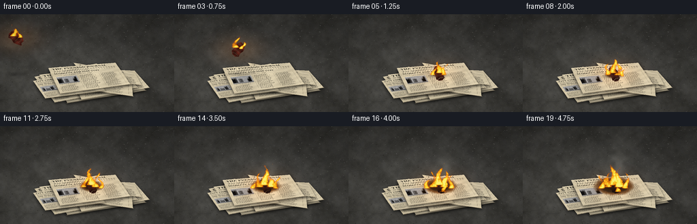
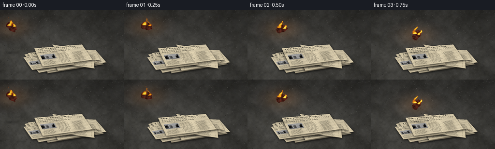

CODING AGENTS AS PIXEL WORLD MODELS
traex/GPT-6.1-Sol · phygen_145
点击播放 · 原生 RGB 像素
逐轮保存的候选
回放视频、检查图与代码变化。
每份候选均可单独播放。实际图片检查记录在下方工具轨迹中。
候选 01播放与检查图
点击播放 · 原生 RGB 像素


展开代码变化
--- 上一保存版本
+++ 本次保存版本
@@ -0,0 +1,279 @@
+from pathlib import Path
+import math
+import numpy as np
+from PIL import Image, ImageDraw, ImageFont, ImageFilter
+import artifact_io
+
+ROOT=Path(__file__).resolve().parent
+W,H,S=256,144,3
+WW,HH=W*S,H*S
+rng=np.random.default_rng(145)
+Y,X=np.mgrid[0:HH,0:WW].astype(np.float32); X/=S; Y/=S
+
+def noise(w,h,seed,size=32):
+ r=np.random.default_rng(seed)
+ a=r.random((max(2,int(h/size)+2),max(2,int(w/size)+2))).astype(np.float32)
+ return np.asarray(Image.fromarray(a,'F').resize((w,h),Image.Resampling.BICUBIC))
+
+def fractal(w,h,seed):
+ return sum(noise(w,h,seed+k*137,s)*v for k,(s,v) in enumerate([(90,.38),(35,.28),(12,.19),(4,.1),(1,.05)]))
+
+stone=fractal(WW,HH,19)
+base=np.zeros((HH,WW,3),np.float32)
+light= .84+.23*np.exp(-((X-74)/120)**2-((Y-55)/105)**2)
+for k,c in enumerate([70,69,65]): base[:,:,k]=(c+40*(stone-.5))*light
+# Dim background, softly lit concrete foreground.
+base*= (.69+.31/(1+np.exp(-(Y-51)/16)))[:,:,None]
+dust=rng.normal(0,1.3,(HH,WW,1)); base+=dust
+bg=Image.fromarray(np.uint8(np.clip(base,0,255))).convert('RGBA')
+d=ImageDraw.Draw(bg)
+for i in range(1050):
+ x,y=rng.uniform(0,WW),rng.uniform(0,HH)
+ rad=rng.choice([.35,.5,.8,1.1]); c=int(rng.uniform(37,88))
+ d.ellipse((x,y,x+rad*S,y+rad*.4*S),fill=(c,c-1,c-4,110))
+# A few faint irregular concrete hairline cracks.
+crack=Image.new('RGBA',(WW,HH)); dc=ImageDraw.Draw(crack)
+for coords in [[(0,126),(26,123),(37,129),(53,128)],[(204,51),(214,62),(227,64),(256,59)],[(0,68),(17,64),(29,69)]]:
+ dc.line([(x*S,y*S) for x,y in coords],fill=(26,26,24,65),width=1)
+bg=Image.alpha_composite(bg,crack.filter(ImageFilter.GaussianBlur(.4*S)))
+
+fontroot='/usr/share/fonts/truetype/dejavu/'
+def font(sz,bold=False):
+ return ImageFont.truetype(fontroot+('DejaVuSerif-Bold.ttf' if bold else 'DejaVuSerif.ttf'),sz)
+
+def newspaper(seed,variant=0):
+ r=np.random.default_rng(seed); w,h=650,460
+ yy,xx=np.mgrid[0:h,0:w]
+ n=fractal(w,h,seed)
+ aging=(n-.5)*19-8*np.exp(-xx/35)-8*np.exp(-(w-xx)/32)
+ col=np.stack([218+aging,205+aging,174+aging],axis=-1)
+ col+=r.normal(0,1.6,(h,w,1))
+ im=Image.fromarray(np.uint8(np.clip(col,0,255))).convert('RGBA'); dr=ImageDraw.Draw(im)
+ ink=(51,49,41,235)
+ title=['THE DAILY NEWS','THE EVENING JOURNAL','CITY CHRONICLE'][variant%3]
+ dr.text((28,17),title,font=font(44 if variant==0 else 36,True),fill=ink)
+ dr.line((27,75,623,75),fill=ink,width=3)
+ dr.text((28,80),'EST. 1892 SATURDAY, OCTOBER 19 No. 2486',font=font(12),fill=ink)
+ dr.line((27,99,623,99),fill=ink,width=1)
+ headline=['NEW PLANS FOR THE CITY','MARKETS AND INDUSTRY','THE WORLD THIS WEEK'][variant%3]
+ dr.text((27,109),headline,font=font(27,True),fill=ink)
+ dr.text((28,148),'Council meets as public works move ahead',font=font(15),fill=ink)
+ # News photograph: a monochrome skyline with a halftone grain.
+ pw,ph=175,125
+ pic=np.full((ph,pw),156.,dtype=np.float32)
+ pic+=r.normal(0,13,(ph,pw))
+ for j in range(14):
+ a=int(r.uniform(0,pw-15)); bw=int(r.uniform(8,23)); top=int(r.uniform(15,65))
+ pic[top:107,a:a+bw]-=r.uniform(40,90)
+ for py in range(top+5,103,9):
+ for px in range(a+3,min(a+bw-1,pw),6): pic[py:py+3,px:px+2]+=40
+ pic[107:,:]-=35
+ py,px=np.mgrid[:ph,:pw]; pic+=(((px+py)%3)==0)*20
+ photo=Image.fromarray(np.uint8(np.clip(pic,0,255))).convert('RGBA')
+ im.alpha_composite(photo,(31,183)); dr=ImageDraw.Draw(im)
+ dr.text((31,312),'Scenes from the city centre',font=font(10),fill=ink)
+ words=['the','city','public','report','people','new','council','work','local','and','of','today','from','plans','district','services','in','will','meeting','years','news']
+ for c in range(3):
+ x=28+c*201
+ dr.line((x+187,180,x+187,428),fill=(97,91,72,170),width=1)
+ start=337 if c==0 else 181
+ for line in range(start,428,12):
+ text='';
+ while len(text)<27: text+=str(r.choice(words))+' '
+ dr.text((x,line),text[:31],font=font(9),fill=ink)
+ # Paper wrinkles and folding, not perfectly planar illumination.
+ a=np.array(im).astype(np.float32)
+ shade=.98+.043*np.sin(xx*.019+yy*.005)+.025*np.sin(yy*.078+xx*.028)
+ fold=1-.17*np.exp(-((xx-w*.52)/4)**2)+.08*np.exp(-((xx-w*.52-6)/6)**2)
+ a[:,:,:3]*=(shade*fold)[:,:,None]
+ # Tiny damaged margins.
+ edge=np.minimum.reduce([xx,yy,w-1-xx,h-1-yy])
+ a[:,:,3]=np.where(edge<2+n*2,0,255)
+ return Image.fromarray(np.uint8(np.clip(a,0,255)))
+
+def coeff(quad,sw,sh):
+ # Destination -> source projective mapping.
+ dst=np.array(quad)*S; src=[(0,0),(sw,0),(sw,sh),(0,sh)]
+ A=[]; b=[]
+ for (x,y),(u,v) in zip(dst,src):
+ A.extend([[x,y,1,0,0,0,-u*x,-u*y],[0,0,0,x,y,1,-v*x,-v*y]])
+ b.extend([u,v])
+ return np.linalg.solve(np.asarray(A),np.asarray(b))
+
+def warp(im,quad):
+ return im.transform((WW,HH),Image.Transform.PERSPECTIVE,coeff(quad,*im.size),Image.Resampling.BICUBIC)
+
+quads=[
+ [(72,88),(181,86),(215,112),(98,131)],
+ [(50,92),(142,72),(187,110),(80,130)],
+ [(96,78),(198,83),(220,108),(119,126)],
+ [(57,89),(166,75),(204,108),(79,122)],
+ [(87,77),(193,91),(196,121),(71,103)],
+ [(48,98),(126,86),(155,112),(66,124)],
+ [(107,71),(199,87),(208,104),(126,97)],
+ [(70,79),(170,71),(192,103),(88,117)],
+]
+pile=bg.copy(); surface=np.zeros((HH,WW),np.float32)
+for i,quad in enumerate(quads):
+ # Contact shadows beneath curled paper layers.
+ sh=Image.new('RGBA',(WW,HH)); ds=ImageDraw.Draw(sh)
+ ds.polygon([(x*S,(y+2)*S) for x,y in quad],fill=(8,8,6,155))
+ pile=Image.alpha_composite(pile,sh.filter(ImageFilter.GaussianBlur(2*S)))
+ paper=warp(newspaper(250+i,i%3),quad)
+ pile=Image.alpha_composite(pile,paper)
+ surface=np.maximum(surface,np.asarray(paper)[:,:,3]/255.)
+ # Edge thickness with an irregular cream highlight.
+ ed=Image.new('RGBA',(WW,HH)); de=ImageDraw.Draw(ed)
+ a,b=quad[2:4]
+ de.line([(a[0]*S,a[1]*S),(b[0]*S,b[1]*S)],fill=(211,190,151,195),width=2)
+ pile=Image.alpha_composite(pile,ed)
+scene=np.asarray(pile.convert('RGB')).astype(np.float32)
+
+# Irregular piece of frayed burgundy cotton; creases and fine woven fibres.
+CW,CH=150,108
+cy,cx=np.mgrid[:CH,:CW]
+cn=fractal(CW,CH,76)
+crease=.72+.19*np.sin(cx*.105+cy*.037)+.10*np.sin(cy*.14-cx*.029)
+clotharr=np.stack([100+26*(cn-.5),40+12*(cn-.5),30+9*(cn-.5)],-1)*crease[:,:,None]
+clotharr+=(np.sin(cx*np.pi)*2+np.sin(cy*np.pi)*2)[:,:,None]
+cloth=Image.fromarray(np.uint8(np.clip(clotharr,0,255))).convert('RGBA')
+cm=Image.new('L',(CW,CH)); dm=ImageDraw.Draw(cm)
+cp=[(14,29),(35,8),(67,16),(91,5),(119,24),(137,42),(130,65),(144,82),(107,94),(80,101),(50,86),(23,90),(8,61)]
+dm.polygon(cp,fill=255); cloth.putalpha(cm)
+dc=ImageDraw.Draw(cloth)
+for j in range(4):
+ x=25+j*28
+ dc.line([(x,18),(x+7,48),(x-1,80)],fill=(143,78,56,105),width=2)
+ dc.line([(x+2,20),(x+10,49),(x+1,84)],fill=(30,20,16,155),width=2)
+# Visible unravelled threads around rag edges.
+for j in range(45):
+ e=j%len(cp); a=np.array(cp[e]); b=np.array(cp[(e+1)%len(cp)]); v=a+(b-a)*rng.random()
+ direction=(v-np.array([75,54])); direction/=np.linalg.norm(direction)
+ endpoint=v+direction*rng.uniform(1,5)
+ dc.line([tuple(v),tuple(endpoint)],fill=(126,82,56,195),width=1)
+
+# Continuous spatial value noise for turbulent, upward-moving flames.
+NR=np.random.default_rng(998).random((256,256)).astype(np.float32)
+def vn(x,y):
+ ix=np.floor(x).astype(int); iy=np.floor(y).astype(int); fx=x-ix; fy=y-iy
+ fx=fx*fx*(3-2*fx); fy=fy*fy*(3-2*fy)
+ return (NR[iy%256,ix%256]*(1-fx)+NR[iy%256,(ix+1)%256]*fx)*(1-fy)+(NR[(iy+1)%256,ix%256]*(1-fx)+NR[(iy+1)%256,(ix+1)%256]*fx)*fy
+
+def turbulence(x,y,t):
+ return .54*vn(x*.20+t*.43,y*.16+t*1.35)+.28*vn(x*.46-t*.7,y*.39+t*2.4)+.18*vn(x*.98+t,y*.84+t*3.3)
+
+def draw_fire(arr,roots,t):
+ density=np.zeros((HH,WW),np.float32)
+ for i,(rx,ry,h,w,power) in enumerate(roots):
+ elev=(ry-Y)/h
+ ed=np.clip(elev,0,1)
+ bend=np.sin(elev*5-t*4+i*1.7)*(.9+ed*4)+ed*1.8
+ center=rx+bend
+ width=w*(1-.79*ed)
+ shape=1-((X-center)/width)**2
+ turb=turbulence(X+i*11,Y-i*7,t)
+ f=shape-(.16+ed*.75)+(turb-.48)*(1.4+ed*.7)
+ f*=np.clip((1-elev)*5,0,1)*np.clip((elev+.045)*15,0,1)
+ f=np.where((elev<1.08)&(elev>-.035),f,0)
+ density=np.maximum(density,np.clip(f,0,1)*power)
+ a=np.clip(density*2.2,0,.96)
+ heat=np.clip(density,0,1)
+ red=np.full_like(heat,255)
+ green=np.clip(65+220*heat,0,250)
+ blue=np.clip(-38+128*heat,0,105)
+ col=np.stack([red,green,blue],-1)
+ # Tiny orange halo, keeping distinct translucent flame outlines.
+ glow=np.asarray(Image.fromarray((np.clip(density,0,1)*255).astype(np.uint8)).filter(ImageFilter.GaussianBlur(2*S)))/255.
+ arr+=glow[:,:,None]*np.array([37,14,2])
+ arr=arr*(1-a[:,:,None])+col*a[:,:,None]
+ # Pale hot base, less extensive than the outer yellow/orange flame.
+ core=np.clip((heat-.72)*2.1,0,.5)
+ arr=arr*(1-core[:,:,None])+np.array([255,237,153])*core[:,:,None]
+ return arr
+
+frames=[]
+for fi in range(20):
+ t=fi/4
+ arr=scene.copy()
+ # The rag is in flight at the start; gravity accelerates it down onto the pile.
+ land=1.15
+ if t<land:
+ u=t/land; rx=24+108*u; ry=35-22*u+73*u*u
+ angle=-35+145*u; rw=28-2*u; rh=19-2*u
+ else:
+ u=min(1,(t-land)/.35); rx=132+2*u; ry=86+2*u
+ angle=110+8*u; rw=27; rh=17-2*u
+ age=max(0,t-land)
+ burn=6+age*5.0
+ dd=np.sqrt(((X-134)/1.14)**2+((Y-88)/.56)**2)
+ brown=np.clip((burn+3-dd+(stone-.5)*9)/6,0,.89)*surface if age>0 else np.zeros_like(X)
+ char=np.clip((burn-3-dd+(stone-.5)*7)/5,0,.87)*surface if age>.35 else np.zeros_like(X)
+ arr=arr*(1-brown[:,:,None])+np.array([86,54,27])*brown[:,:,None]
+ arr=arr*(1-char[:,:,None])+np.array([26,24,20])*char[:,:,None]
+ # Local illumination from the burning cloth and expanding small fire.
+ glow=np.exp(-((X-rx)/33)**2-((Y-ry)/19)**2)*(.7+.2*np.sin(t*13)+age*.085)
+ arr+=glow[:,:,None]*np.array([41,18,2])
+ # Rag's landing/contact shadow.
+ sha=np.exp(-((X-rx)/(rw*.47))**2-((Y-(88 if t<land else ry+3))/3)**2)
+ sha*= .22 if t<land else .47
+ arr*=1-sha[:,:,None]
+ frame=Image.fromarray(np.uint8(np.clip(arr,0,255))).convert('RGBA')
+ rag=cloth.copy()
+ if age:
+ ca=np.array(rag).astype(float)
+ black=np.clip((age*.16+.18)-(cx/CW)*.22+(cn-.5)*.25,0,.72)
+ ca[:,:,:3]=ca[:,:,:3]*(1-black[:,:,None])+np.array([18,16,13])*black[:,:,None]
+ rag=Image.fromarray(np.uint8(ca))
+ rag=rag.resize((int(rw*S),int(rh*S)),Image.Resampling.LANCZOS).rotate(angle,Image.Resampling.BICUBIC,expand=True)
+ frame.alpha_composite(rag,(int(rx*S-rag.width/2),int(ry*S-rag.height/2)))
+ arr=np.array(frame.convert('RGB')).astype(float)
+ # Smoke puffs rise and spread, subtle and wispy at first.
+ sm=np.zeros((HH,WW),np.float32)
+ for p in range(17):
+ born=p*.27
+ dt=t-born
+ if dt<0 or dt>3.8: continue
+ # Trail while in flight; contact source after landing.
+ if born<land:
+ bu=born/land; sx=24+108*bu; sy=35-22*bu+73*bu*bu
+ else: sx,sy=134,86
+ sx+=3*dt+3*np.sin(p*2.6+dt); sy-=dt*16
+ size=3.5+dt*5.5
+ gauss=np.exp(-((X-sx)/size)**2-((Y-sy)/(size*1.28))**2)
+ n=vn(X*.11+t*.3,Y*.12+t*.7)
+ strength=(.025 if born<land else .055+age*.018)*min(dt/.25,1)*max(0,1-dt/4)
+ sm+=gauss*strength*(.3+n)
+ sm=np.clip(sm,0,.33)
+ arr=arr*(1-sm[:,:,None])+np.array([136,134,127])*sm[:,:,None]
+ # Small flames stay attached to the flying cloth, then kindle adjacent paper.
+ if t<land:
+ roots=[(rx-4,ry-3,18+3*np.sin(t*8),5.6,.91),(rx+5,ry-1,12,4.3,.9)]
+ else:
+ roots=[(132,86,22+age*3+3*np.sin(t*9),6.5+age*.65,1),
+ (140,89,16+age*3+2*np.sin(t*7),5+age*.7,.96),
+ (124,89,14+age*4,4+age*.8,.92)]
+ if age>.85:
+ roots.append((145+age*1.7,91,12+age*3,3+age*.65,.91))
+ if age>1.8:
+ roots.append((119-age*1.1,91,12+age*2.2,3.5+age*.5,.9))
+ if age>2.7:
+ roots.append((139,96,14+age*1.4,5,.92))
+ arr=draw_fire(arr,roots,t)
+ # Occasional rising embers, not a shower of artificial sparks.
+ spark=Image.new('RGBA',(WW,HH)); ds=ImageDraw.Draw(spark)
+ if age>.2:
+ for j in range(5):
+ dt=(t+j*.36)%1.9
+ if dt<.20: continue
+ ex=130+j*3+math.sin(j*7+dt*3)*4+dt*2; ey=84-dt*(17+j*2)
+ al=int(210*(1-dt/1.9))
+ ds.ellipse((ex*S,ey*S,(ex+.5)*S,(ey+.8)*S),fill=(255,151,38,al))
+ final=Image.alpha_composite(Image.fromarray(np.uint8(np.clip(arr,0,255))).convert('RGBA'),spark).convert('RGB')
+ final=final.resize((W,H),Image.Resampling.LANCZOS)
+ a=np.array(final).astype(float)
+ # Soft photographic vignette; keep the papers brightly exposed.
+ v=1-.12*((X[::S,::S]-130)/164)**2-.075*((Y[::S,::S]-77)/104)**2
+ a*=v[:,:,None]
+ frames.append(np.uint8(np.clip(a,0,255)))
+artifact_io.save(np.stack(frames),ROOT)
+print('Saved 20 RGB frames at 256 x 144, 4 fps.')
可观测工具轨迹
实际执行的命令与返回图片。
命令 1exit 0
/bin/bash -lc "ls -la && cat prompt.txt && printf '\\n---RULES---\\n' && cat GENERATION_RULES.md && printf '\\n---SPEC---\\n' && cat task_spec.json"
命令 2exit 0
/bin/bash -lc "cat artifact_io.py && python - <<'PY'
import PIL, numpy
print('PIL', PIL.__version__)
PY"命令 3exit 0
/bin/bash -lc 'fc-list | head -15'
命令 4exit 0
/bin/bash -lc "cat > generate.py <<'PY'
from pathlib import Path
import math
import numpy as np
from PIL import Image, ImageDraw, ImageFont, ImageFilter
import artifact_io
ROOT=Path(__file__).resolve().parent
W,H,S=256,144,3
WW,HH=W*S,H*S
rng=np.random.default_rng(145)
Y,X=np.mgrid[0:HH,0:WW].astype(np.float32); X/=S; Y/=S
def noise(w,h,seed,size=32):
r=np.random.default_rng(seed)
a=r.random((max(2,int(h/size)+2),max(2,int(w/size)+2))).astype(np.float32)
return np.asarray(Image.fromarray(a,'F').resize((w,h),Image.Resampling.BICUBIC))
def fractal(w,h,seed):
return sum(noise(w,h,seed+k*137,s)*v for k,(s,v) in enumerate([(90,.38),(35,.28),(12,.19),(4,.1),(1,.05)]))
stone=fractal(WW,HH,19)
base=np.zeros((HH,WW,3),np.float32)
light= .84+.23*np.exp(-((X-74)/120)**2-((Y-55)/105)**2)
for k,c in enumerate([70,69,65]): base[:,:,k]=(c+40*(stone-.5))*light
# Dim background, softly lit concrete foreground.
base*= (.69+.31/(1+np.exp(-(Y-51)/16)))[:,:,None]
dust=rng.normal(0,1.3,(HH,WW,1)); base+=dust
bg=Image.fromarray(np.uint8(np.clip(base,0,255))).convert('RGBA')
d=ImageDraw.Draw(bg)
for i in range(1050):
x,y=rng.uniform(0,WW),rng.uniform(0,HH)
rad=rng.choice([.35,.5,.8,1.1]); c=int(rng.uniform(37,88))
d.ellipse((x,y,x+rad*S,y+rad*.4*S),fill=(c,c-1,c-4,110))
# A few faint irregular concrete hairline cracks.
crack=Image.new('RGBA',(WW,HH)); dc=ImageDraw.Draw(crack)
for coords in [[(0,126),(26,123),(37,129),(53,128)],[(204,51),(214,62),(227,64),(256,59)],[(0,68),(17,64),(29,69)]]:
dc.line([(x*S,y*S) for x,y in coords],fill=(26,26,24,65),width=1)
bg=Image.alpha_composite(bg,crack.filter(ImageFilter.GaussianBlur(.4*S)))
fontroot='/usr/share/fonts/truetype/dejavu/'
def font(sz,bold=False):
return ImageFont.truetype(fontroot+('DejaVuSerif-Bold.ttf' if bold else 'DejaVuSerif.ttf'),sz)
def newspaper(seed,variant=0):
r=np.random.default_rng(seed); w,h=650,460
yy,xx=np.mgrid[0:h,0:w]
n=fractal(w,h,seed)
aging=(n-.5)*19-8*np.exp(-xx/35)-8*np.exp(-(w-xx)/32)
col=np.stack([218+aging,205+aging,174+aging],axis=-1)
col+=r.normal(0,1.6,(h,w,1))
im=Image.fromarray(np.uint8(np.clip(col,0,255))).convert('RGBA'); dr=ImageDraw.Draw(im)
ink=(51,49,41,235)
title=['THE DAILY NEWS','THE EVENING JOURNAL','CITY CHRONICLE'][variant%3]
dr.text((28,17),title,font=font(44 if variant==0 else 36,True),fill=ink)
dr.line((27,75,623,75),fill=ink,width=3)
dr.text((28,80),'EST. 1892 SATURDAY, OCTOBER 19 No. 2486',font=font(12),fill=ink)
dr.line((27,99,623,99),fill=ink,width=1)
headline=['NEW PLANS FOR THE CITY','MARKETS AND INDUSTRY','THE WORLD THIS WEEK'][variant%3]
dr.text((27,109),headline,font=font(27,True),fill=ink)
dr.text((28,148),'Council meets as public works move ahead',font=font(15),fill=ink)
# News photograph: a monochrome skyline with a halftone grain.
pw,ph=175,125
pic=np.full((ph,pw),156.,dtype=np.float32)
pic+=r.normal(0,13,(ph,pw))
for j in range(14):
a=int(r.uniform(0,pw-15)); bw=int(r.uniform(8,23)); top=int(r.uniform(15,65))
pic[top:107,a:a+bw]-=r.uniform(40,90)
for py in range(top+5,103,9):
for px in range(a+3,min(a+bw-1,pw),6): pic[py:py+3,px:px+2]+=40
pic[107:,:]-=35
py,px=np.mgrid[:ph,:pw]; pic+=(((px+py)%3)==0)*20
photo=Image.fromarray(np.uint8(np.clip(pic,0,255))).convert('RGBA')
im.alpha_composite(photo,(31,183)); dr=ImageDraw.Draw(im)
dr.text((31,312),'Scenes from the city centre',font=font(10),fill=ink)
words=['the','city','public','report','people','new','council','work','local','and','of','today','from','plans','district','services','in','will','meeting','years','news']
for c in range(3):
x=28+c*201
dr.line((x+187,180,x+187,428),fill=(97,91,72,170),width=1)
start=337 if c==0 else 181
for line in range(start,428,12):
text='';
while len(text)<27: text+=str(r.choice(words))+' '
dr.text((x,line),text[:31],font=font(9),fill=ink)
# Paper wrinkles and folding, not perfectly planar illumination.
a=np.array(im).astype(np.float32)
shade=.98+.043*np.sin(xx*.019+yy*.005)+.025*np.sin(yy*.078+xx*.028)
fold=1-.17*np.exp(-((xx-w*.52)/4)**2)+.08*np.exp(-((xx-w*.52-6)/6)**2)
a[:,:,:3]*=(shade*fold)[:,:,None]
# Tiny damaged margins.
edge=np.minimum.reduce([xx,yy,w-1-xx,h-1-yy])
a[:,:,3]=np.where(edge<2+n*2,0,255)
return Image.fromarray(np.uint8(np.clip(a,0,255)))
def coeff(quad,sw,sh):
# Destination -> source projective mapping.
dst=np.array(quad)*S; src=[(0,0),(sw,0),(sw,sh),(0,sh)]
A=[]; b=[]
for (x,y),(u,v) in zip(dst,src):
A.extend([[x,y,1,0,0,0,-u*x,-u*y],[0,0,0,x,y,1,-v*x,-v*y]])
b.extend([u,v])
return np.linalg.solve(np.asarray(A),np.asarray(b))
def warp(im,quad):
return im.transform((WW,HH),Image.Transform.PERSPECTIVE,coeff(quad,*im.size),Image.Resampling.BICUBIC)
quads=[
[(72,88),(181,86),(215,112),(98,131)],
[(50,92),(142,72),(187,110),(80,130)],
[(96,78),(198,83),(220,108),(119,126)],
[(57,89),(166,75),(204,108),(79,122)],
[(87,77),(193,91),(196,121),(71,103)],
[(48,98),(126,86),(155,112),(66,124)],
[(107,71),(199,87),(208,104),(126,97)],
[(70,79),(170,71),(192,103),(88,117)],
]
pile=bg.copy(); surface=np.zeros((HH,WW),np.float32)
for i,quad in enumerate(quads):
# Contact shadows beneath curled paper layers.
sh=Image.new('RGBA',(WW,HH)); ds=ImageDraw.Draw(sh)
ds.polygon([(x*S,(y+2)*S) for x,y in quad],fill=(8,8,6,155))
pile=Image.alpha_composite(pile,sh.filter(ImageFilter.GaussianBlur(2*S)))
paper=warp(newspaper(250+i,i%3),quad)
pile=Image.alpha_composite(pile,paper)
surface=np.maximum(surface,np.asarray(paper)[:,:,3]/255.)
# Edge thickness with an irregular cream highlight.
ed=Image.new('RGBA',(WW,HH)); de=ImageDraw.Draw(ed)
a,b=quad[2:4]
de.line([(a[0]*S,a[1]*S),(b[0]*S,b[1]*S)],fill=(211,190,151,195),width=2)
pile=Image.alpha_composite(pile,ed)
scene=np.asarray(pile.convert('RGB')).astype(np.float32)
# Irregular piece of frayed burgundy cotton; creases and fine woven fibres.
CW,CH=150,108
cy,cx=np.mgrid[:CH,:CW]
cn=fractal(CW,CH,76)
crease=.72+.19*np.sin(cx*.105+cy*.037)+.10*np.sin(cy*.14-cx*.029)
clotharr=np.stack([100+26*(cn-.5),40+12*(cn-.5),30+9*(cn-.5)],-1)*crease[:,:,None]
clotharr+=(np.sin(cx*np.pi)*2+np.sin(cy*np.pi)*2)[:,:,None]
cloth=Image.fromarray(np.uint8(np.clip(clotharr,0,255))).convert('RGBA')
cm=Image.new('L',(CW,CH)); dm=ImageDraw.Draw(cm)
cp=[(14,29),(35,8),(67,16),(91,5),(119,24),(137,42),(130,65),(144,82),(107,94),(80,101),(50,86),(23,90),(8,61)]
dm.polygon(cp,fill=255); cloth.putalpha(cm)
dc=ImageDraw.Draw(cloth)
for j in range(4):
x=25+j*28
dc.line([(x,18),(x+7,48),(x-1,80)],fill=(143,78,56,105),width=2)
dc.line([(x+2,20),(x+10,49),(x+1,84)],fill=(30,20,16,155),width=2)
# Visible unravelled threads around rag edges.
for j in range(45):
e=j%len(cp); a=np.array(cp[e]); b=np.array(cp[(e+1)%len(cp)]); v=a+(b-a)*rng.random()
direction=(v-np.array([75,54])); direction/=np.linalg.norm(direction)
endpoint=v+direction*rng.uniform(1,5)
dc.line([tuple(v),tuple(endpoint)],fill=(126,82,56,195),width=1)
# Continuous spatial value noise for turbulent, upward-moving flames.
NR=np.random.default_rng(998).random((256,256)).astype(np.float32)
def vn(x,y):
ix=np.floor(x).astype(int); iy=np.floor(y).astype(int); fx=x-ix; fy=y-iy
fx=fx*fx*(3-2*fx); fy=fy*fy*(3-2*fy)
return (NR[iy%256,ix%256]*(1-fx)+NR[iy%256,(ix+1)%256]*fx)*(1-fy)+(NR[(iy+1)%256,ix%256]*(1-fx)+NR[(iy+1)%256,(ix+1)%256]*fx)*fy
def turbulence(x,y,t):
return .54*vn(x*.20+t*.43,y*.16+t*1.35)+.28*vn(x*.46-t*.7,y*.39+t*2.4)+.18*vn(x*.98+t,y*.84+t*3.3)
def draw_fire(arr,roots,t):
density=np.zeros((HH,WW),np.float32)
for i,(rx,ry,h,w,power) in enumerate(roots):
elev=(ry-Y)/h
ed=np.clip(elev,0,1)
bend=np.sin(elev*5-t*4+i*1.7)*(.9+ed*4)+ed*1.8
center=rx+bend
width=w*(1-.79*ed)
shape=1-((X-center)/width)**2
turb=turbulence(X+i*11,Y-i*7,t)
f=shape-(.16+ed*.75)+(turb-.48)*(1.4+ed*.7)
f*=np.clip((1-elev)*5,0,1)*np.clip((elev+.045)*15,0,1)
f=np.where((elev<1.08)&(elev>-.035),f,0)
density=np.maximum(density,np.clip(f,0,1)*power)
a=np.clip(density*2.2,0,.96)
heat=np.clip(density,0,1)
red=np.full_like(heat,255)
green=np.clip(65+220*heat,0,250)
blue=np.clip(-38+128*heat,0,105)
col=np.stack([red,green,blue],-1)
# Tiny orange halo, keeping distinct translucent flame outlines.
glow=np.asarray(Image.fromarray((np.clip(density,0,1)*255).astype(np.uint8)).filter(ImageFilter.GaussianBlur(2*S)))/255.
arr+=glow[:,:,None]*np.array([37,14,2])
arr=arr*(1-a[:,:,None])+col*a[:,:,None]
# Pale hot base, less extensive than the outer yellow/orange flame.
core=np.clip((heat-.72)*2.1,0,.5)
arr=arr*(1-core[:,:,None])+np.array([255,237,153])*core[:,:,None]
return arr
frames=[]
for fi in range(20):
t=fi/4
arr=scene.copy()
# The rag is in flight at the start; gravity accelerates it down onto the pile.
land=1.15
if t<land:
u=t/land; rx=24+108*u; ry=35-22*u+73*u*u
angle=-35+145*u; rw=28-2*u; rh=19-2*u
else:
u=min(1,(t-land)/.35); rx=132+2*u; ry=86+2*u
angle=110+8*u; rw=27; rh=17-2*u
age=max(0,t-land)
burn=6+age*5.0
dd=np.sqrt(((X-134)/1.14)**2+((Y-88)/.56)**2)
brown=np.clip((burn+3-dd+(stone-.5)*9)/6,0,.89)*surface if age>0 else np.zeros_like(X)
char=np.clip((burn-3-dd+(stone-.5)*7)/5,0,.87)*surface if age>.35 else np.zeros_like(X)
arr=arr*(1-brown[:,:,None])+np.array([86,54,27])*brown[:,:,None]
arr=arr*(1-char[:,:,None])+np.array([26,24,20])*char[:,:,None]
# Local illumination from the burning cloth and expanding small fire.
glow=np.exp(-((X-rx)/33)**2-((Y-ry)/19)**2)*(.7+.2*np.sin(t*13)+age*.085)
arr+=glow[:,:,None]*np.array([41,18,2])
# Rag's landing/contact shadow.
sha=np.exp(-((X-rx)/(rw*.47))**2-((Y-(88 if t<land else ry+3))/3)**2)
sha*= .22 if t<land else .47
arr*=1-sha[:,:,None]
frame=Image.fromarray(np.uint8(np.clip(arr,0,255))).convert('RGBA')
rag=cloth.copy()
if age:
ca=np.array(rag).astype(float)
black=np.clip((age*.16+.18)-(cx/CW)*.22+(cn-.5)*.25,0,.72)
ca[:,:,:3]=ca[:,:,:3]*(1-black[:,:,None])+np.array([18,16,13])*black[:,:,None]
rag=Image.fromarray(np.uint8(ca))
rag=rag.resize((int(rw*S),int(rh*S)),Image.Resampling.LANCZOS).rotate(angle,Image.Resampling.BICUBIC,expand=True)
frame.alpha_composite(rag,(int(rx*S-rag.width/2),int(ry*S-rag.height/2)))
arr=np.array(frame.convert('RGB')).astype(float)
# Smoke puffs rise and spread, subtle and wispy at first.
sm=np.zeros((HH,WW),np.float32)
for p in range(17):
born=p*.27
dt=t-born
if dt<0 or dt>3.8: continue
# Trail while in flight; contact source after landing.
if born<land:
bu=born/land; sx=24+108*bu; sy=35-22*bu+73*bu*bu
else: sx,sy=134,86
sx+=3*dt+3*np.sin(p*2.6+dt); sy-=dt*16
size=3.5+dt*5.5
gauss=np.exp(-((X-sx)/size)**2-((Y-sy)/(size*1.28))**2)
n=vn(X*.11+t*.3,Y*.12+t*.7)
strength=(.025 if born<land else .055+age*.018)*min(dt/.25,1)*max(0,1-dt/4)
sm+=gauss*strength*(.3+n)
sm=np.clip(sm,0,.33)
arr=arr*(1-sm[:,:,None])+np.array([136,134,127])*sm[:,:,None]
# Small flames stay attached to the flying cloth, then kindle adjacent paper.
if t<land:
roots=[(rx-4,ry-3,18+3*np.sin(t*8),5.6,.91),(rx+5,ry-1,12,4.3,.9)]
else:
roots=[(132,86,22+age*3+3*np.sin(t*9),6.5+age*.65,1),
(140,89,16+age*3+2*np.sin(t*7),5+age*.7,.96),
(124,89,14+age*4,4+age*.8,.92)]
if age>.85:
roots.append((145+age*1.7,91,12+age*3,3+age*.65,.91))
if age>1.8:
roots.append((119-age*1.1,91,12+age*2.2,3.5+age*.5,.9))
if age>2.7:
roots.append((139,96,14+age*1.4,5,.92))
arr=draw_fire(arr,roots,t)
# Occasional rising embers, not a shower of artificial sparks.
spark=Image.new('RGBA',(WW,HH)); ds=ImageDraw.Draw(spark)
if age>.2:
for j in range(5):
dt=(t+j*.36)%1.9
if dt<.20: continue
ex=130+j*3+math.sin(j*7+dt*3)*4+dt*2; ey=84-dt*(17+j*2)
al=int(210*(1-dt/1.9))
ds.ellipse((ex*S,ey*S,(ex+.5)*S,(ey+.8)*S),fill=(255,151,38,al))
final=Image.alpha_composite(Image.fromarray(np.uint8(np.clip(arr,0,255))).convert('RGBA'),spark).convert('RGB')
final=final.resize((W,H),Image.Resampling.LANCZOS)
a=np.array(final).astype(float)
# Soft photographic vignette; keep the papers brightly exposed.
v=1-.12*((X[::S,::S]-130)/164)**2-.075*((Y[::S,::S]-77)/104)**2
a*=v[:,:,None]
frames.append(np.uint8(np.clip(a,0,255)))
artifact_io.save(np.stack(frames),ROOT)
print('Saved 20 RGB frames at 256 x 144, 4 fps.')
PY
python generate.py"命令 5exit 0
/bin/bash -lc "python - <<'PY'
from pathlib import Path
import numpy as np
p=Path('.')
a=np.load(p/'pixels.npz')['pixels']
print('RGB video tensor:',a.shape,'dtype:',a.dtype)
print('PNG frames:',len(list((p/'frames').glob('*.png'))))
for name in ['generate.py','pixels.npz','index.html','inspection.png']:
print(name,(p/name).stat().st_size,'bytes')
PY"视觉工具实际返回图片 1

保存候选 1 份；完成命令 5 次；可验证图片返回 1 张。原始 API 响应与完整日志保留在本地。